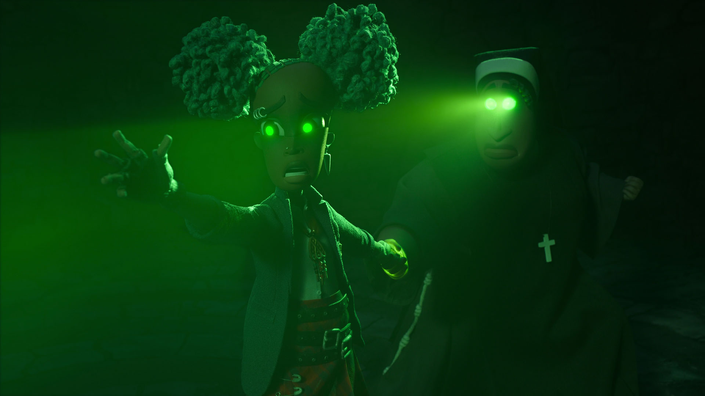

انیمیشن وندل و وایلد بهعنوان نخستین ساختهی بلند سینمایی هنری سلیک پس از انیمیشن محبوب و ستایششدهی کورالین، از یک تناقض اساسی در داستانگویی رنج میبرد. با نقد زومجی همراه باشید.
فرض کنید دوستی از شما میپرسد که انیمیشن وندل و وایلد دربارهی چیست؟ به شکل طبیعی تلاش خواهید کرد در قالب فشردهای که کلیدیترین نکات داستانی فیلم را بدون لو دادن غافلگیریهایش معرفی میکند، تصویر درستی از قصه بسازید. میشود انتظار داشت نتیجهی تلاشتان چنین چیزی باشد: «فیلم دربارهی دختربچهای است به نام کت؛ که در یک حادثهی رانندگی پدر و مادرش را از دست میدهد و بابت این اتفاق خودش را مقصر میداند و در ادامه باید با فقدان آنها و احساس گناه خودش دستوپنجه نرم کند». ممکن است دوستتان بپرسد «پس وندل و وایلد کیاند؟» و شما پاسخ دهید «هان! دو شیطان کوچک هم در فیلم هستند که قصد دارند از جهان زیرزمینی فرار کنند و برای این کار به کمک دختر نیاز دارند.» دوستتان احتمالا در این نقطه به سوالی کلیدی میرسد: «پس فیلم دربارهی اونها است؟» و شما ناچارید پاسخ دهید که: «هم آره...و هم نه!» وندل و وایلد از دو تکهی روایی تشکیل شده که به شکل موازی، تا بههمرسیدن پیشرفت میکنند. دختر و ماجراهایش در مدرسهی کاتولیک، و هیولاهای مزهپران (با صداپیشگی زوج کمیک موفق جردن پیل و کیگان مایکل-کی) و زندگیشان زیرِ زمین. این دوگانگی جهان داستان در کارهای پیشین سلیک موتیفی ثابت بوده. شهر کریسمس و شهر هالووین در کابوس قبل از کریسمس (The Nightmare Before Christmas)، جهان واقعی و دنیای خیالانگیز داخل هلوی غولپیکر در جیمز و هلوی غولپیکر (James and the Giant Peach)، عالم بیداری و عالم کابوس/رویا در مانکیبون (Monkeybone)، و دو جهان متناظر و موازی در کورالین (Coraline). در تقریبا تمام این آثار، آلترناتیو/جایگزینی از جنس جادوی فانتزی و تصاویر فراواقعی جایی ورای مرزهای محقر واقعیت خستهکننده و معمول روزمره قابل دستیابی است، و رخنهی تدریجی این نظم تازه به زندگی قهرمانهای جسور قصه، محور روایت.
این جستوجو برای چیزی بیشتر، چیزی بزرگتر، چیزی متفاوت با آنچه همگان به آن خو گرفتهاند و عادت کردهاند، مبنای پیشبرد روایت در آثار پیشین سلیک بود، و تنظیم درست زاویهی دید، شرط همراهی کامل مخاطب با سیر وقایع قصه. اگر انتقال از یک پلاتپوینت به واقعهی مهم داستانی دیگر در این آثار اهمیتی در ذهن و دل مخاطب پیدا میکرد، و در پرداخت و اجرا انرژی و شوری داشت، ناشی بود از همین فهم صحیح نسبت و زاویهمان با وقایعی که تماشا میکنیم. که مناظر غریب و جادههای تاریک قصه را با کفشهای چه کسی قدم میزنیم؟ در کابوس قبل از کریسمس، طی تصمیمی جالب، ابتدا از جهان فراواقعی آغاز میکنیم و درنهایت به جهان واقعی قدم میگذاریم. احساس مکاشفه و حیرتی که به سنت داستانهای فانتزی باید از برخورد عینیت آشنا با بداعت خیال حاصل شود، با انتخابی خلاقانه در زاویهی دید، معکوس میشود و از این طریق آنچه اهمیت پیدا میکند، نه فقط تصاویر و ایدههای جالبی که در جانبخشی به شهر هالووین بهکارگرفتهشدهاند، که مواجههی هم بامزه و هم احساسبرانگیز یک ترسانندهی تنها، با گرمای احساسات انسانی جاری در سنت ساده و آشنایی چون کریسمس است. وقتی میدانیم وقایع را از مجرای دریافتهای کدام شخصیت تماشا میکنیم، نسبت روشنی با مختصات لحنی اثر داریم. و از سوی دیگر، خود فیلم هم در صورتبندی ساختار روایت و معرفی شخصیتهایش به بیراهه نمیرود. مثلا، نیازی نداریم از شهر کریسمس یا جهان واقعی در قالب شخصیتی محوری نمایندهای در داستان داشته باشیم. در همراهی با اسکلینگتون آنها را کشف میکردیم، و از نگاه او بهشان قدم میگذاشتیم؛ اما از جزئیات اضافهای که آنچه میشناسیم را بهمان توضیح دهند، خبری نبود. در اقتباس سلیک از رمان جیمز و هلوی غولپیکر رولد دال، با پسربچهی یتیم و تلاش او برای فرار از دست دو عمهی بدجنساش، شروع میکنیم. این مقدمهی آشنا و سیاهی زندگی سخت جیمز، وقتی در نسبت با خیالپردازی کودکانه و آرزوی دیرینهی او برای سفر به نیویورک قرار میگیرد، هلوی غولپیکر را به چیزی بیش از یک ایدهی جالب فانتزی و یک نمایهی جذاب بصری تبدیل میکند. اینجا هم همراهی با تجربهی ذهنی و شخصی پسرک از ماجراجوییهای خیالانگیز پیش رو، نسبتمان را با وقایع جاری روشن میسازد.
حتی شلختگی ساختهی پر از ایده اما بیسروتهی چون مانکیبون هم سبب نمیشود تا سلیک و همکار فیلمنامهنویس او در انتخاب زاویهی صحیح برای پرداخت به قصه، دچار اشتباه شود. در این فیلم، هنرمند خلاقی که ایدههای جنونآمیزی را در قالب کامیک استریپهای محبوب و موفقاش به تصویر میکشد، طی حادثهای به کما میرود و درون همان ذهنی گیر میافتد که جنون سرگرمکنندهی مخلوقاتاش را تصور میکرد. «داونتاون» و انفجار خلاقانهای که ایدههای بیربطی را در گوشهگوشهاش پراکنده، در نسبت مستقیم با ذهنیت و خیال شخصیت قرار میگرفت، و شگفتی او از مواجهه با آشفتگی دیوانهوار وقایعی که در این شهر انتظارش را میکشیدند، بهدرستی تجربهی مخاطب را بر تجربهی شخصیت منطبق میکرد. انتقال بین دو جهان و وقایع موازی آن هم ازطریق بود و نبود جسم و روح کاراکتر اصلی در آنها، متحد میشد.
بهترین ساختهی سلیک یعنی کورالین بهلطف غنای خیال نیل گیمن، بهترین نسخهی این دوگانگی را هم ارائه میداد. در آن فیلم نسبت جهان جایگزین با واقعیت آشنا، از جنس تناظر و البته تضاد بود. همان محیطها، همان افراد؛ با حذف جنبههای ناخوشایند زندگی سرد دخترک و پدر و مادرش و اضافه شدن چیزهایی که شاید آرزو میکرد در روزمرگی کماتفاقاش بهشان میرسید. اگر در واقعیت مادر کورالین وقتی برای آشپزی نداشت، «مادر دیگر» او غذاهای هوسانگیزی میپخت. اگر پدر دخترک ماجراجوی قصه، نویسندهی منزوی و افسردهای بود که در تنهایی خستهکنندهاش مانند یک ماشین تایپ بیجان کلماتی را روی کاغذ میآورد، «پدر دیگر» او موزیسین پرانرژی و خوشذوقی میشد که بهتنهایی و خلوت نوشتن در اتاق پرنور و زیبایش معنای دیگری میبخشید. راه انتقال بین این دو جهان باید هم درِ کوچک و مخفیای میبود که دخترک آرزو میکرد جای آجرهایی که مسدودش کردهاند، مسیری به دنیایی جالبتر باشد. ایدهها و لحظات مختلف جهان موازی، وقتی در ارتباط با افکار و احساسات شخصیت اصلی قرار میگرفتند، به شکلی معنادار و زیبا برای قصهای که به تماشا نشستهایم شبکهای از نظم و تناسب درونی میساختند.
اگر دوگانهی محوری قصهی وندل و وایلد، و همچنین تصمیمات روایی هنری سلیک و جوردن پیل برای صورتبخشی به روایت آن را از این زاویه ببینیم، چه چیزی عایدمان میشود؟ پروتاگونیست این قصه کیست؟ نسبت شهر کوچک و متروک با جهان زیرزمین چیست؟ تلاش کت برای فرار از احساس گناه ناشی از خاطرهی تراژیک زندگیاش، به تلاش وندل و وایلد برای عملی کردن طرحشان دربارهی شهر بازی چه دخلی دارد؟ ارتباط دو طرف قصه چطور شکل میگیرد؟ چرا وندل و وایلد به آن شکل بیمعنا کت را تصور میکنند؟ چه چیزی باعث میشود کت این دو را «شیاطین خودش» بداند؟ ارتباط خصوصیات هر کدامشان با روحیات یا زندگی دختر چیست؟
مسئله اینجاست که دو ایدهی کاملا متمایز و مطلقا بیربط برای سرهمکردن قصهای بهکارگرفتهشدهاند که حقیقتا وجود ندارد. فیلم با پوششی جعلی، نمایندگی تاریکی درون شخصیت را به شیاطینی میسپارد که سالها بعد و به شکلی اتفاقی ملاقاتشان کرده. ایدهی روی کاغذ را میشود فهمید. عبارت «شیاطین من» قرار بوده بیانی نمادین بسازد برای مبارزهی انسان با امیال مخرب ناشی از حسرتهای فروخوردهی گذشته. شکلی که حال و آیندهی فرد رنجور از واقعهای تراژیک، به سرزنش دائمی خودش و تعریف مداوم سراپای وجودش در نسبت با خاطرهای برآشوبنده گره میخورد. اما دو خط مجزای داستانی مربوطبه دختر و شیاطین، تا اندازهای از ارتباط طبیعی تهیاند که خود سلیک و پیل هم نهایتا قید اتصالشان را میزنند و پاکسازی روان کت از احساس گناه ویرانگرش را به آن صحنهی بهغایت شعاری، بهشدت بیمزه و بسیار سطحی «تالار رستگاری» میسپارند. جایی که شخصیت در قالب کلیپی شبیه به چیزی که آدم از یک ارائهی تصویری پاورپوینت (!) انتظارش را دارد، «با گذشتهاش مواجه میشود» و میفهمد «خاطراتاش این هیولا را ساختهاند». خواهر هلی توصیه میکند که «خاطراتاش را مال خودش کند» و لحظهای بعد همین هم میشود! دختر با یک حرکت سادهی دست، زنجیرهای هیولایی که طی سالها سرزنش و درگیری درونی ساخته را میشکافد، و اعلام میکند که از این به بعد «خودش کنترل زندگیاش را در دست دارد»!
پس وندل و وایلد نه نمایندهی احساس گناه کت هستند، نه تاریکیای که شخصیت در مبارزه با این احساس گناه در آن فرو میرود. تناقض اساسی اینجاست که از طرفی دو کاراکتر همنام با فیلم، رسما هیچ ارتباط معناداری با زندگی شخصیت اصلی قصه ندارند، و از طرف دیگر، اگر صورتبندی روایت و شروع قصه با کت بهعنوان پروتاگونیست را نادیده بگیریم و آنطور که نام فیلم بر آن تاکید دارد، قصه را از زاویهی وندل و وایلد ببینیم، این داستان میشود ماجرایی بهسادگی و کممایگی تکاپوی دو شیطان کوچک برای ایجاد شهر بازی محبوبشان. آنها روزانه به کاشتن مو روی سر پدری مشغولاند که اجازه نمیدهد «نمایشگاه رویا»شان را در «نمایشگاه جیغ» او پیاده کنند. پس از مست شدن با کرم موی پدر (!)، وندل و وایلد دختری را در خیالشان میبینند که در ادامه تصادفا و بیربط به اقداماتشان به دوشیزهی جهنم تبدیل میشود و در تلاش برای زنده کردن پدر و مادرش، به جهان واقعی احضارشان میکند. وقتی به سطح زمین میرسند، برای تأمین مالی ایدهی محبوبشان، با شرکت بزرگی به نام کلاکس کورپ معاملهی ناموفقی انجام میدهند، اما نهایتا پدرشان به ساخت شهر بازی رویاییشان راضی میشود. چرا؟ چون قبلی را در مسیر سردرآوردن از زیرِ زمین نابود کرده!
فارغ از جذابیت یا عدم جذابیت این خط داستانی، همانطور که پیداست، هیچیک از دو پیرنگ موازی، نه به شکل مستقل توسعهی معناداری پیدا میکنند و نه ارتباطشان با یکدیگر به نتیجهی صحیحی میرساندشان. مبارزهی کت با گذشتهاش، نه در نتیجهی بلوغی حقیقی در روان و افکار شخصیت، که به شکلی تحمیلی و باورناپذیر و سریع و خلقالساعه به پیروزی ختم میشود. تلاش وندل و وایلد برای عینیت بخشیدن به رویاشان هم نه به خاطر تکاپویی که برای برهمزدن نظم خستهکنندهی تحمیلی به زندگیشان داشتهاند، که به شکلی کاملا اتفاقی و خارج از کنترلشان به نتیجه میرسد. اما وقتی قصهای حقیقی برای روایت نداشته باشیم، چطور میتوانیم مدت زمان یک فیلم بلند داستانی را با محتوا پر کنیم؟ پاسخ سلیک و پیل افزودن به خطوط و شخصیتهای فرعی بوده. جزئیاتی که در غنی کردن هیچ کلیتی به کار نمیآیند. وندل و وایلد، محل برخورد چندین ایدهی بیربط است که هیچرقمه به هم نمیچسبند. بعضیشان حتما از کتاب منتشر نشدهی سلیک و کلی چپمن به همین نام آمدهاند، بعضی دیگرشان به دغدغههای اجتماعی-فرهنگی جردن پیل شبیهاند، و برخیشان گویی از پروژهی بهنتیجهنرسیدهی سلیک با دیزنی و پیکسار راهشان را به ساختهی تازهاش پیدا کردهاند. خالق کورالین در پی موفقیت همهجانبهی این انیمیشن و از سال ۲۰۱۰ برای توسعهی اثری به نام پادشاه سایهها (The Shadow King) تلاش کرد؛ که با وجود تیم مستعد هنرمندان مشغول در مراحل ساختاش، و پیشرفت جدی پروژه، نهایتا در سال ۲۰۱۲ توسط دیزنی کنسل شد. (سلیک بهتازگی اعلام کرده که حقوق فیلم را از دیزنی بازپسگرفته و ممکن است بالاخره تحت هدایت خلاقانهی خودش به نتیجه برسد). در خلاصهی داستان اولیهی آن پروژهی ناتمام، اشارهای وجود دارد به پسری که دستهای عجیباش را از دیگران مخفی میکند، اما درنهایت همانها را برای مبارزه با هیولایی به کار میگیرد که قصد نابود کردن نیویورک را دارد.
طرحهای هنریای که لو رومانو، طراح تولید شگفتانگیزان پیکسار و همین انیمیشن وندل و وایلد برای پروژهی پادشاه سایهها کشیدهبود
از این زمینهی داستانی، ایدهی دستان عجیب، به نشان دوشیزهی جهنم روی دست کت تبدیل شده، و خطر نابودی نیویورک هم احتمالا به ویرانی رست بنک توسط کلاکس کورپ تغییر کرده. اما ایدههای داستانی مجزا و منفصل فیلم نمونههای پرشمار دیگری دارند. تلاش کلاکس کورپ برای ساخت زندان، پروندهی کارگران کشتهشده در آتشسوزی، تاریخچهی حرفهی شکار شیاطین در شهر، پروژهی شخصی رائول، قسم خدمتی که کت از میانهی فیلم میخورد، و نهایتا «قدرت» ویژهاش در پیشبینی آینده. پیدا کردن ربط طبیعی یا منطقی هر یک از این ایدهها به یکدیگر، خیلی آسان نیست. چرا آن اختاپوس سر کلاس آن واکنش را به کت نشان میدهد؟ جز اینکه نویسندگان برای سوق دادن شخصیت به سمت تماس فیزیکی با عروسک طلسمشده نیازش داشتهاند؟ گسترش دامنهی قصه به شخصیتهای فرعی متعدد و زمینهی اجتماعی-فرهنگی شهر محل رخداد وقایع، چه آوردهای برای فیلم دارد؟ جز اینکه به کارِ تراشیدن حدی از مسئولیتپذیری اجتماعی در قالب طرح دیدگاهی سیاسی دربارهی شرکتهای بزرگ گردانندهی منابع قدرت در ایالات متحده، و نگاه فاشیستی مالکانشان میآید؟ (انگیزهی پشت انتخاب نام «کلاکس کورپ» واضحتر از آن است که دعوتی برای چنین خوانشی درنظرگرفته نشود!) پروژهی شخصی رائول چه ربطی به سایر ماجراهای فیلم پیدا میکند؟ آیا باید آن برانگیخته شدن همدلی پدرانهی بافالو بلزر در پایان بهدلیل تماشای نقاشی بزرگ پسرک لاتینتبار را جدی بگیریم؟ قدرت ویژهی کت چه نسبتی با باقی اجزای جهان این داستان دارد؟ جز اینکه به درد برداشتی شعاری بخورد؛ در این حد که: «قربانیان حوادث تروماتیک در صورت پیروزی بر مبارزهی درونیشان، توانایی تغییر دادن آینده را دارند»، و پیام انساندوستانهای به فیلم اضافه کند؟
این پرگویی و حرافی و حجم بیشازحد ایدههای فیلمنامه، وقتی آزاردهندهتر میشود که در فیلمی از هنری سلیک شاهدش باشیم؛ هنرمند خلاقی که با ساختههای پیشیناش نمونههایی متعالی از فضاسازی و داستانگویی بصری را در فرم انیمیشن استاپموشن ارائه داده. در همین اثر تازه هم میشود گاهی از نقش داستانی-روایی صحنهها صرفنظر کرد و ایدههای تماشایی سلیک در طراحی زیباشناختی فیلم را ستود. از دکورهای چشمگیر مدرسهی کاتولیک و «اسکریم فر» و شهر رست بنک، تا جزئیات سرسامآور مدلهای فیزیکی شخصیتها و نحوهی دقیقی که زبان بدنشان در تناسب با وقایع قصه واکنش نشان میدهد. از زبان بصری متنوعی که گسترهای از اندازهی نما و حرکات دوربین را بیاعتنا به محدودیتهای فیزیکی ساخت انیمیشن استاپ موشن بهکارمیگیرد، تا نورپردازی سینمایی چشمگیری که کم از تولیدات درجهی یک لایواکشن هالیوودی ندارد.
وقتی نام هنری سلیک را پای یک فیلم میبینیم، میتوانیم در هر لحظه قابی شگفتانگیز را انتظار بکشیم (مثل شکلی که صعود وندل و وایلد به سطح زمین تبدیل میشود به آن نماهای دوبعدی پرجزئیات)، اما شاید بهترین نمونهی این خودبسندگی خلاقیتهای بصری هنرمند برجستهی آمریکایی، و شکلی که پرچانهگی فیلمنامهی وندل و وایلد هدرش میدهد، در همان فصل «تالار رستگاری» مشهود باشد. بیش از سه دقیقه شعار و حرافی در باب روبهرو شدن با گذشتهی تاریک، پس از وقفهای کوتاه، ما را به ادامهی موقعیت و صحنهی مختصری میرساند که بدون رد و بدل شدن یک کلمه دیالوگ، جوهرهی مواجهه و سپس صلح درونی شخصیت با خودش را در قالب یک تصویرسازی خلاقانه به نمایش میکشد. سلیک که قدر و ارزش تصاویر را به خوبی میشناسد، با طراحی بصری ظریف و زیبایی، «شیاطین درون» شخصیت را در قالب موجودی نمایش میدهد که سر و بدنش گذشتهی تراژیک و خاطرات حسرتآمیز کت را نمایندگی میکنند، و حالات چهره و بدناش، غم و آسیب درونی او را. دخترک در لحظهای احساس برانگیز، با کنار گذاشتن خشماش، جای جنگیدن با این هیولا، دست دوستی به سمت تنهایی وجودش دراز میکند. هیولای متعجب، به سمت دختر راهی میشود و این دو در سکوت اعماق آب یکدیگر را در آغوش میگیرند. این بیان موجز و هنرمندانه، تمام چیزی را «انتقال میدهد» که صحنهی مطول پیشین «فریادش میزد». و همهی آنچه را نمایندگی میکند که ساختهی تازهی سلیک میتوانست باشد؛ اما نیست.